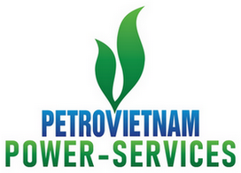

PVPS · Nhà máy điện Vân Phong (gói Tuabin) PVPS · Van Phong Power Plant (turbine package)
- Bối cảnhContext
- PVPS cần hàng trăm thợ cho đợt bảo dưỡng nhà máy điện Vân Phong. Hồ sơ đến từ hơn 20 nguồn (nhân viên tuyển dụng, đối tác, tổ đội), phỏng vấn ở nhiều trạm, và mỗi người đạt phải đủ hồ sơ 10 mục theo chuẩn nhà máy trước buổi học an toàn. PVPS needed hundreds of workers for a maintenance outage at Van Phong power plant. Applications came from 20+ sources (recruiters, partners, crews), interviews ran at several stations, and every passed worker needed a complete 10-item plant-standard dossier before safety training.
- Hành độngAction
- Nhận dự án từ 22/09/2026; gom đăng ký về một danh sách gốc, đối chiếu theo số CCCD; phỏng vấn đợt đầu ngày 09/10, từ 12/10 phỏng vấn thợ cơ khí theo 3 trạm online (trạm tôi phụ trách: 294 thợ trong 12–14/10); lập hồ sơ 10 mục cho từng người (ảnh, CCCD, chứng chỉ, khám sức khoẻ, xét nghiệm, HĐLĐ, bảo hiểm tai nạn, NĐ44, thẻ an toàn điện, nhóm máu); chấm công, đối soát công với khách và lập bảng lương. Took over the project on 22/09/2026; merged registrations into one master list matched by ID number; first interviews on 09/10, then mechanical interviews across 3 online stations from 12/10 (my station: 294 workers in 12–14/10); built a 10-item dossier for every worker (photo, ID, certificates, medical, drug test, contract, accident insurance, Decree-44, electrical safety card, blood group); timekeeping, client reconciliation and payroll.
- Kết quảResult
- 863 hồ sơ → 533 phỏng vấn → 423 đạt → 362 thợ điều động. Trong 15–25/10: 200 thợ khám sức khoẻ và xét nghiệm ngay ngày 20/10, 493 HĐLĐ hiệu lực từ 20/10, 140 thợ học an toàn ngày 24–25/10. Đến 07/11: 455/550 thợ đủ cả 10 mục. Bảng lương 427 người, kiểm 0 sai. 863 applications → 533 interviews → 423 passed → 362 workers mobilised. Within 15–25/10: 200 workers had medical checks and drug tests on 20/10 alone, 493 labor contracts effective from 20/10, 140 workers completed safety training on 24–25/10. By 07/11: 455 of 550 workers had all 10 documents. Payroll for 427 workers, 0 errors found.